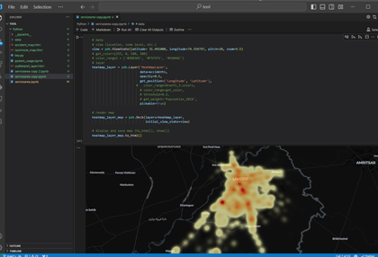
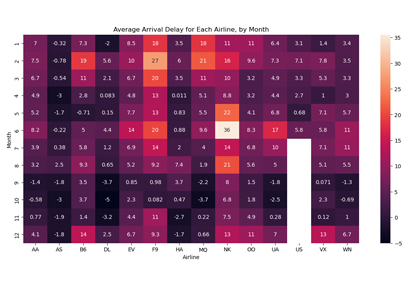
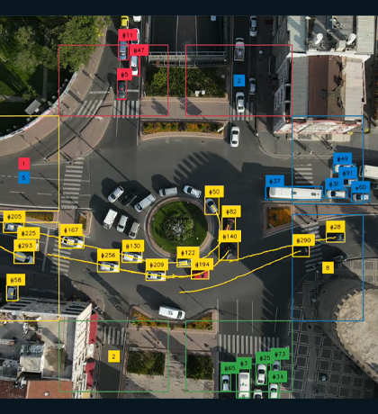
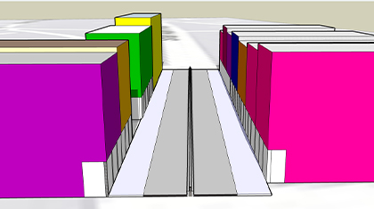
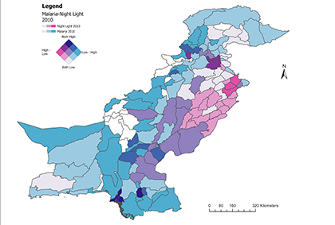
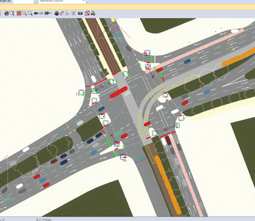

Hi! I am Talha, A transportation engineer with 4+ years of research and consulting experience.
Areas of Expertise
Talha combines hands-on field engineering with geospatial analysis and applied research. His work in traffic safety uses spatial and statistical methods to identify crash patterns and inform countermeasures. In GIS and remote sensing, he works with satellite imagery, drone survey data, and spatial databases to assess infrastructure exposure and risk. In transportation planning, he applies travel demand modeling and transit data analysis to support public agency and community decision-making. Across all of this, his technical foundation in Python, R, and statistical modeling lets him move from raw data to actionable findings.

Data Analytics

Artificial Intelligence

Urban Design

GIS & Remote Sensing

Traffic Modelling
Collaborations
- M.E in Civil and Environmental Engineering - Utah State University, 2026
- M.Phil in Space Science - University of the Punjab, 2022
- B.Sc in Transportation Engineering - U.E.T Lahore, 2020
- Emergency managers’ perspectives on the safety of wireless electrified roadways in disaster-prone states across the U.S.[2026]
- Coverage and equity analysis on San Francisco Muni Bus Service [2026]
- Mobility disruption and wellbeing following the 2023 Vermont flood [2026]
- Structurally deficient bridges in wildland–urban interface in the US [2025]
- Electric vehicle infrastructure resilience under wildfire risk in the US [2025]
- Geospatial artificial intelligence to detect post-earthquake structural damage [2025]
- Cache County Climate Assessment [2025]
- AI-driven WebGIS route optimization dashboard for a municipal waste management company.[2024]
- Improving road safety in Lahore through road traffic crash hotspot identification.[2023]
- Improving responce time of emergency responce vehicles using capacitated facility allocation method.[2023]
- Impact assessment study of proposed elevated expressway of Lahore.[2023]
- Master Plan of Sialkot.[2022]
- Master Plan of Peshawar, Charsadda, Mingora and Sawat.[2022]
- [M.Phil] Route selection and optimization study using advanced geospatial techniques.
- [B.Sc] Evaluation of traffic flow characteristics along major urban arterial.
- Graduate Research Assistant - Utah State University (2025 - 2026)
- Research Assistant - CITY @ LUMS (2023 - 2024)
- M.Phil Research Student - University of the Punjab (2021-2022)
- B.Sc Research Student - UET Lahore (2019-2020)

Education
Projects
Research Experience
About Me

Talha is more than a researcher; he is an explorer navigating the intersections of technology, policy, and urban life. Fuelled by a relentless curiosity, his journey is dedicated to decoding the complexities that shape our cities and impact our lives.
Contact
Personal Email: talhaquddos@gmail.com
Work Email: talha.quddoos@usu.edu
Contact No: 435-374-2032